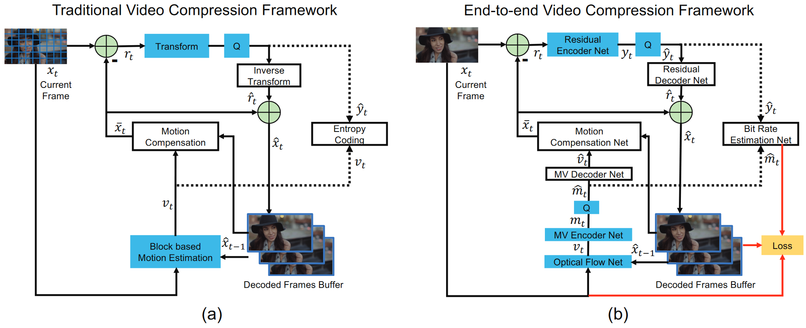
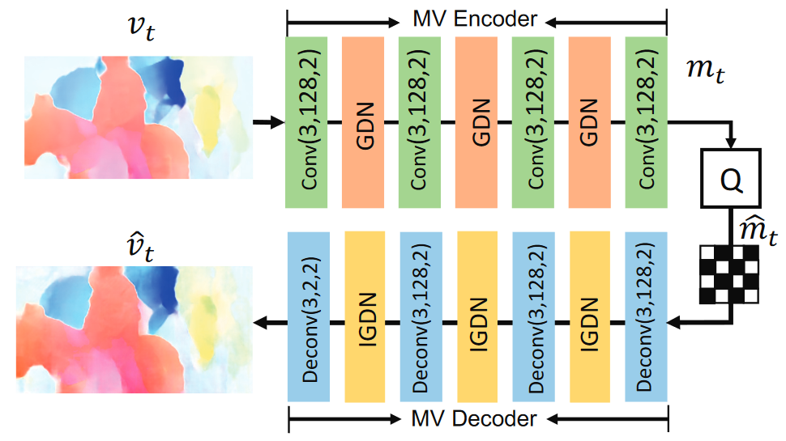
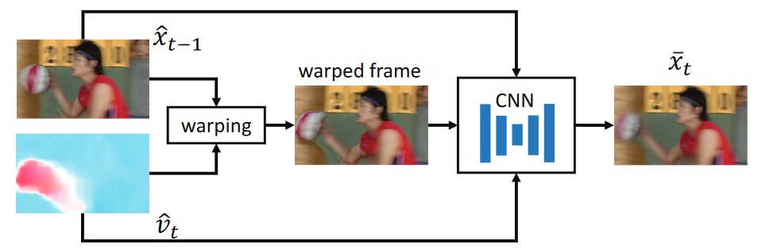

DVC: An End-to-end Deep Video Compression Framework
Key Points
end-to-end video compression deep model
learning based optical flow estimation
auto-encoder style neural networks
Rate-distoration optimization(RDO)
context models to learn the adaptive / non-adaptive arithmetic coding method
generalized divisive normalization (GDN): 一种更适合图像重建的归一化层
Proposed Method

Step 1. Motion estimation and compression
CNN model to estimate the optical flow
MV encoder-decoder network: an auto-encoder style network to compress the optical flow

Step 2. Motion compensation

Step 3-4. Transform, quantization and inverse transform
Transform and inverse: highly non-linear residual encoder-decoder network
Quantization: in order to build ab end-to-end training scheme 量化操作不可差分
replace the quantization operation by adding uniform noise in the traning stage
Step 5. Entropy coding
CNNs Bit rate estimation net to obtain the probability distribution of each symbol
通过CNN估计高斯分布的参数
The correct measure for bitrate is the entropy of the corresponding latent representation symbols.